Le Collège d'Enseignement Technique Industriel et Commercial (CETIC) de Mezessé est un établissement public d'enseignement technique et professionnel de l'arrondissement de Sangmélima (département du Dja-et-Lobo, région du Sud), sous la tutelle du Ministère des Enseignements Secondaires. Il compte environ 4 classes, 70 élèves et 30 enseignants.
Comme dans beaucoup d'établissements, les notes circulent sur papier ou dans des tableurs dispersés. Le calcul des moyennes, des rangs et des statistiques, puis la rédaction des bulletins, mobilisent le Surveillant Général pendant plusieurs jours à chaque séquence, avec un risque d'erreur de recopie.
1.2 Objectifs
Permettre à chaque professeur de saisir ses notes, y compris depuis un téléphone et sans réseau.
Calculer automatiquement notes de période, moyennes, rangs, grades, cotes et statistiques.
Produire en un clic les bulletins bilingues (séquence, trimestre, année) et les listes de classe.
Donner à la direction une vue d'ensemble : classement général, première et dernière classe, comparaisons.
Garder l'historique sur plusieurs années scolaires.
Produire les documents de la direction sur le modèle de l'établissement : tableau d'honneur et attestations de présence effective au poste des personnels.
1.3 Livrables
Livrable
Technologies
API (serveur)
Java 21, Spring Boot 3.5 (Web, Security, Data JPA, Validation), Hibernate, Flyway, PostgreSQL, PDFBox, Apache POI
Flutter (Dart), fl_chart, stockage local pour le hors connexion
Documents
Ce rapport, un manuel et un guide de première utilisation par rôle, les règles de gestion, les diagrammes sources (docs/diagrammes)
2. Cahier des charges et acteurs
2.1 Acteurs
Professeur Saisit les notes des élèves de ses classes dans ses matières, identifie les élèves sans note, consulte les statistiques de ses matières.
Surveillant Général (SG) Organise l'année : élèves, classes, groupes de matières, matières et coefficients, comptes enseignants, séquences. Génère bulletins, listes et tableau d'honneur, consulte notes, statistiques et classement.
Directeur ou Directrice (chef d'établissement) Consulte toutes les listes et statistiques, crée un élève, renvoie un élève et le réintègre, désapprouve les décisions du SG, délivre les attestations de présence effective au poste, règle avec le SG la moyenne du tableau d'honneur.
Système Calcule les résultats, attribue les matricules, conserve la file d'attente des notes saisies hors connexion.
2.2 Matrice des droits
Les droits sont vérifiés par l'API à chaque requête ; l'interface ne fait que masquer ce qui n'est pas permis.
Fonction
Professeur
SG
Directeur
Saisir les notes de ses matières
oui
non
non
Élèves sans note, statistiques de ses matières
oui
toutes
toutes
Créer un élève
non
oui
oui
Modifier un élève, importer, réinscrire
non
oui
non
Classes, groupes, matières, comptes enseignants
non
gestion
lecture
Ouvrir et fermer une séquence, années scolaires
non
oui
lecture
Bulletins, listes, relevés
non
oui
oui
Toutes les notes, statistiques, classement général
non
oui
oui
Renvoyer et réintégrer un élève
non
lecture
oui
Paramètres de l'établissement et barèmes
non
oui
lecture
Tableau d'honneur : moyenne minimale, liste et certificats
non
oui
oui
Carrière des personnels
non
enseignants
oui
Attestations de présence effective au poste
non
non
oui
Journal des décisions du SG, désapprobation
non
non
oui
2.3 Exigences non fonctionnelles
Bilinguisme des documents officiels (français et anglais), interface en français.
Hors connexion sur mobile : consultation de la dernière version connue et saisie des notes différée.
Interface sobre, sans pictogrammes décoratifs, avec un fond dessiné propre à l'établissement, un mode clair et un mode sombre.
3. Règles de gestion
Ces règles ont été validées avec le commanditaire avant le développement. Chacune est appliquée dans l'API et, quand c'est possible, garantie par une contrainte de la base.
N°
Règle
RG-01
Trois rôles : Directeur (chef d'établissement), Surveillant Général, Professeur. Le Directeur et le SG sont créés à l'installation ; le SG crée les comptes des professeurs.
RG-02
On se connecte avec son téléphone ou son e-mail (au moins l'un des deux, chacun unique) et un mot de passe.
RG-03
Un mot de passe créé ou réinitialisé par le SG vaut password et doit être changé à la connexion suivante (8 caractères au moins, différent de password).
RG-04
Une session dure 12 heures ; un compte désactivé perd l'accès immédiatement.
RG-05
Une année scolaire compte six séquences, deux par trimestre. Une seule année est active.
RG-06
Une nouvelle année peut reprendre l'organisation d'une autre : groupes, classes, matières, coefficients, professeurs.
RG-07
Une classe appartient à une année ; son nom est unique dans l'année.
RG-08
Un groupe de matières appartient à une année et peut être rattaché à plusieurs classes.
RG-09
Une matière appartient à une classe et à un groupe rattaché à cette classe ; coefficient entier de 1 à 20 ; au plus un professeur.
RG-10
Supprimer une matière qui a des notes exige une confirmation et efface ses notes ; une matière notée ne change plus de classe.
RG-11
Le matricule scolaire est généré : préfixe, deux chiffres de l'année, rang sur quatre chiffres (CTM26-0007). Le matricule national (cartescolaire.cm) est facultatif et unique.
RG-12
Un élève a au plus une inscription par année. Un élève qui a des notes ne change plus de classe dans l'année.
RG-13
L'import d'élèves est « tout ou rien » : une seule ligne invalide et rien n'est enregistré.
RG-14
Le SG et le Directeur créent les élèves ; seul le SG les modifie.
RG-15
Seul le Directeur renvoie (date et motif obligatoires) et réintègre. Un élève renvoyé sort des listes, calculs, classements et bulletins ; ses notes sont conservées.
RG-16
Une note par élève, matière et séquence, entre 0 et 20, deux décimales au plus.
RG-17
Seul le professeur de la matière saisit ses notes, et seulement si la séquence est ouverte.
RG-18
Le SG ouvre et ferme la saisie séquence par séquence ; une séquence fermée est en lecture seule et peut être rouverte.
RG-19
Le professeur saisit la compétence visée de sa matière pour chaque séquence.
RG-20
Une matière où aucun élève n'a de note sur une séquence est « non évaluée » et retirée du calcul pour tous ; dans une matière évaluée, l'élève sans note a 0.
RG-21
Note de trimestre = moyenne des séquences évaluées du trimestre ; note annuelle = moyenne des trimestres évalués.
RG-22
Moyennes de groupe et générale pondérées par les coefficients des matières évaluées.
RG-23
Rangs sur les valeurs arrondies au centième ; les ex æquo partagent le rang et le suivant est sauté.
RG-24
Grades (par matière) et cotes (moyenne générale) suivent des barèmes modifiables par le SG ; chaque mention s'applique à partir de sa borne basse, incluse ; un barème commence à 0.
RG-25
Un élève réussit avec une moyenne arrondie de 10 ou plus.
RG-26
Le bulletin est bilingue, une page A4 par élève ; le bloc discipline et l'emplacement du cachet restent vides (remplis à la main).
RG-27
Le classement général range tous les élèves de l'établissement ensemble, toutes classes confondues.
RG-28
Sur mobile, les notes saisies sans réseau sont gardées puis envoyées automatiquement ; un refus du serveur est signalé et la note n'est pas perdue.
RG-33
Le chef d'établissement s'intitule « Directeur », ou « Directrice » si sa civilité est « Mme » ; ce titre s'affiche dans l'application et s'imprime sur les cartes scolaires, les attestations et les certificats. L'en-tête officiel des documents est bilingue : République, ministère, délégations régionale et départementale, arrondissement, sigle et localité (« CETIC DE MEZESSE » / « GTC MEZESSE »), téléphone.
RG-34
Seul le Directeur délivre l'attestation de présence effective au poste, à un personnel (enseignant ou SG ; jamais au Directeur lui-même, dont l'attestation relève de sa hiérarchie) dont la carrière est renseignée : matricule, grade, fonction et date de prise de service obligatoires, acte de nomination facultatif. Chaque attestation reçoit un numéro dans l'année scolaire (« N° 006/2026-2027/CETIC/D ») et garde les informations du jour où elle est délivrée.
RG-35
Un élève figure au tableau d'honneur d'une période quand sa moyenne arrondie au centième atteint la moyenne minimale (12,00 par défaut), réglée par le Directeur ou le SG. Le certificat est bilingue, sans mention d'encouragements ni de félicitations, et signé par le professeur principal et le Directeur. Le bulletin porte la mention « TABLEAU D'HONNEUR / HONOUR ROLL ».
4. Conception des données : MCD et MLD
4.1 Modèle conceptuel des données (Merise)
Le MCD comporte dix entités. L'association OBTENIR est ternaire : une note relie une inscription, une matière et une séquence, et porte la valeur. L'INSCRIPTION est l'élève dans une classe pour une année : c'est sur elle que portent les notes et le renvoi, ce qui permet de réinscrire un élève l'année suivante sans perdre son historique.
Figure 1 — Modèle conceptuel des données (Merise)
4.2 Dictionnaire des données (extrait)
Entité
Propriété
Type
Contrainte
ÉLÈVE
matricule
texte
unique, généré (RG-11)
ÉLÈVE
matricule national
texte
facultatif, unique
ÉLÈVE
sexe
énumération
M ou F
INSCRIPTION
statut
énumération
ACTIF ou RENVOYÉ
MATIÈRE
coefficient
entier
1 à 20
OBTENIR (NOTE)
valeur
décimal (4,2)
0 à 20 ; unique par (inscription, matière, séquence)
facultatif, unique (matricule de la fonction publique)
ATTESTATION
référence
texte
unique, « N° 001/2026-2027/CETIC/D » (RG-34)
ÉTABLISSEMENT
moyenne minimale du tableau d'honneur
décimal (4,2)
12,00 par défaut (RG-35)
BARÈME
libellé, borne basse
texte, décimal
unique par (type, libellé)
4.3 Passage au modèle logique
Chaque entité devient une table ; son identifiant devient la clé primaire.
Une association de cardinalités (x,n)–(1,1) disparaît : la table du côté (1,1) reçoit une clé étrangère (par exemple MATIERE.classeId).
Une association (0,1) donne une clé étrangère facultative (MATIERE.professeurId, CLASSE.profPrincipalId).
L'association n-n REGROUPER devient la table de jointure CLASSE_GROUPE.
Les associations porteuses OBTENIR et VISER deviennent les tables NOTE et COMPETENCE_VISEE.
Les associations BÉNÉFICIER et DÉLIVRER donnent les clés étrangères ATTESTATION.utilisateurId et ATTESTATION.parId. L'attestation recopie aussi le nom, le grade et la fonction du bénéficiaire du jour où elle est délivrée : corriger la carrière ensuite ne modifie pas une attestation déjà signée.
Description textuelle : « Saisir les notes de ses matières »
Acteur
Professeur
Préconditions
Le professeur est connecté ; la matière lui est attribuée ; la séquence est ouverte.
Scénario nominal
1. Il choisit la matière et la séquence. 2. Le système affiche les élèves actifs de la classe et leurs notes. 3. Il saisit la compétence visée et les notes. 4. Il enregistre. 5. Le système contrôle et enregistre, puis confirme.
Variantes
4a. Pas de réseau (mobile) : les notes sont mises en file d'attente et envoyées plus tard. 5a. Note hors de 0 à 20 ou à plus de deux décimales : refus avec message. 5b. Séquence fermée entre-temps : refus, le professeur demande la réouverture.
Postcondition
Les notes sont enregistrées et comptent dans les calculs.
Description textuelle : « Renvoyer un élève »
Acteur
Directeur
Préconditions
L'inscription de l'élève pour l'année est active.
Scénario nominal
1. Il ouvre la fiche de l'élève et choisit « Renvoyer ». 2. Il saisit la date et le motif. 3. Le système passe l'inscription à RENVOYÉ et enregistre le renvoi avec son auteur.
Postcondition
L'élève n'apparaît plus que dans « Élèves renvoyés » ; la réintégration annule l'effet et garde l'historique.
Description textuelle : « Délivrer une attestation de présence effective au poste »
Acteur
Directeur
Préconditions
Le bénéficiaire a un compte (enseignant ou SG).
Scénario nominal
1. Il ouvre « Attestations de présence » et choisit « Nouvelle attestation ». 2. Il choisit le personnel ; le système affiche sa carrière. 3. Il complète le matricule, le grade, la fonction et la date de prise de service. 4. Il délivre. 5. Le système enregistre la carrière, attribue le numéro suivant de l'année et garde l'attestation au registre. 6. Il imprime le PDF et le signe.
Variantes
4a. Carrière incomplète : refus, avec la liste de ce qui manque. 4b. Le bénéficiaire est le Directeur lui-même : refus, son attestation relève de sa hiérarchie.
Postcondition
L'attestation figure au registre avec sa référence et peut être réimprimée à l'identique.
5.2 Diagramme de classes
Figure 4 — Diagramme de classes du domaine
5.3 Diagrammes de séquence
Figure 5 — Saisie des notes, avec et sans réseauFigure 6 — Génération des bulletins d'une ou plusieurs classes
5.4 Diagrammes d'états
Figure 7 — Cycle de vie d'une séquence et d'une inscription
5.5 Diagramme de déploiement
Figure 8 — Architecture de déploiement
6. Calcul des résultats et statistiques
Tous les calculs sont regroupés dans un module pur (api/src/calcul/resultats.ts), sans accès à la base : il reçoit les matières, les élèves et les notes, et rend les résultats. Il est ainsi testable isolément. Notations : ne,m,s la note de l'élève e en matière m à la séquence s, cm le coefficient.
6.1 Note d'une période
Séquence s : n(e,m,s) = note saisie, ou 0 si la matière est évaluée sans note pour e, ou « non évaluée »
Trimestre T : n(e,m,T) = moyenne des n(e,m,s) des séquences évaluées de T
Année : n(e,m,A) = moyenne des n(e,m,T) des trimestres évalués
6.2 Totaux et moyennes
Total(e,m) = n(e,m) × c(m)
Moyenne du groupe G = Σm∈G évaluée n(e,m)·c(m) / Σm∈G évaluée c(m)
Moyenne générale = Σm évaluée n(e,m)·c(m) / Σm évaluée c(m)
6.3 Rangs
Les valeurs sont arrondies au centième puis triées par ordre décroissant ; le rang d'un élève est 1 + le nombre d'élèves strictement meilleurs. Deux moyennes égales donnent le même rang, marqué « ex », et le rang suivant est sauté (12 ; 12 ; 10 donne 1er ex, 1er ex, 3e).
6.4 Statistiques descriptives
Moyenne : x̄ = (1/N) Σ xi · Écart-type : σ = √[(1/N) Σ (xi − x̄)²]
Taux de réussite = 100 × card{ i : arrondi(xi) ≥ 10 } / N · Étendue : [min ; max]
Répartition par tranches : [0;5[, [5;8[, [8;10[, [10;12[, [12;14[, [14;16[, [16;20]
Ces indicateurs sont calculés par matière, par classe et pour l'établissement, globalement et séparément pour les filles et les garçons, et suivis d'une période à l'autre. Le classement des classes utilise la moyenne générale de chaque classe.
6.5 Mentions
La mention d'une valeur est celle du seuil le plus haut dont la borne basse est atteinte. Barèmes par défaut :
Grade (matière)
A ≥ 16
B+ ≥ 15
B ≥ 14
C+ ≥ 12
C ≥ 10
D < 10
Cote (moyenne générale)
CTBA ≥ 16
CBA ≥ 14
CA ≥ 12
CMA ≥ 10
CNA < 10
Exemple vérifié par les tests : un élève a 12 en mathématiques (coef 4), 14 en français (coef 2) et 15 en atelier (coef 3), la matière EPS n'étant pas évaluée. Total = 48 + 28 + 45 = 121 ; coefficients = 9 ; moyenne = 121 / 9 ≈ 13,44 ; cote CA. EPS ne compte ni au numérateur ni au dénominateur.
7. Architecture et réalisation technique
7.1 Organisation du code
Dossier
Contenu
dépôt cetic-mezesse-backend
API Spring Boot selon la structure habituelle : entity (entités JPA), repository (Spring Data), service (règles de gestion ; service/calcul est le module pur des calculs de la section 6), controller (une ressource REST par domaine), dto (entrées validées et réponses), security (JWT, rôles), document (PDF et Excel)
src/main/resources/db/migration
Migrations Flyway de la base (V1 à V5) ; l'amorçage et le jeu de démonstration se lancent avec l'option --amorcer
dépôt cetic-mezesse-web
Une page par adresse (src/app), écrans par rôle (src/ecrans), composants communs, graphiques, motif de fond
mobile/lib
Client API avec cache, file d'attente hors connexion, écrans par rôle
7.2 Sécurité
Mots de passe hachés avec bcrypt ; jeton JWT signé, valable 12 heures, vérifié à chaque requête par Spring Security avec l'état du compte.
Contrôle des rôles côté serveur sur chaque route, par des annotations sur les méthodes des contrôleurs ; un professeur n'accède qu'à ses matières.
Validation de toutes les entrées avec Bean Validation ; messages d'erreur en français.
Limitation des tentatives de connexion (20 par quart d'heure) ; en-têtes de sécurité HTTP ; CORS limité aux origines déclarées.
Secrets (base, B2, JWT) dans des variables d'environnement, jamais dans le dépôt.
7.3 Intégrité des données
Les règles critiques sont portées par des contraintes PostgreSQL : unicité d'une note par (inscription, matière, séquence), d'une inscription par (élève, année), des matricules ; suppression en cascade des notes d'une matière supprimée ; interdiction de supprimer un groupe encore utilisé. Le matricule est attribué par un compteur incrémenté de façon atomique, ce qui évite les doublons en cas de créations simultanées. Les opérations multiples (feuille de notes, import, renvoi) sont faites en transaction.
7.4 Documents PDF et Excel
Les documents sont dessinés avec PDFBox. Leur en-tête officiel, commun à tous, reprend celui des documents de l'établissement : République, ministère, délégations, arrondissement, sigles français et anglais, téléphone et emblème. Les bulletins sont dessinés page par page : en-tête, identité et photo de l'élève, tableau par groupes de matières, blocs discipline, travail de l'élève avec la cote cochée, profil de la classe, signatures. La hauteur des lignes s'adapte au nombre de matières pour tenir sur une page A4. Les listes et relevés Excel sont produits avec Apache POI. Les certificats du tableau d'honneur (deux par page A4, signés par le professeur principal et le Directeur) et les attestations de présence effective au poste suivent les modèles en usage dans l'établissement.
7.5 Fonctionnement hors connexion (mobile)
Chaque lecture réussie est copiée sur le téléphone ; sans réseau, l'application relit cette copie. Les notes enregistrées sans réseau sont placées dans une file d'attente persistante, fusionnée par feuille (matière et séquence), et réaffichées sur la feuille. La file est vidée au retour du réseau, chaque minute ou à la demande ; une feuille refusée par le serveur reste dans la file avec le motif du refus.
8. Interface utilisateur
Le commanditaire voulait une interface « vraiment propre », sans pictogrammes décoratifs ni effets reconnaissables des gabarits générés, avec une image de fond inspirée d'un motif scolaire. Choix retenus :
un motif dessiné pour l'établissement : seize objets scolaires et techniques (équerre, compas, clé plate, multimètre, résistance, rapporteur…) tracés en SVG, repris à l'identique dans l'application mobile ;
le contenu posé sur une feuille blanche ; des tableaux denses et lisibles, adaptés à un outil d'administration ;
une palette bleue et un mode sombre aux couleurs propres, pas une simple inversion ;
des états signalés par un trait de couleur et du texte, jamais par la couleur seule ;
des couleurs de graphiques vérifiées pour les daltoniens et le contraste, dans les deux modes ;
l'écran de connexion aux couleurs officielles : filet du drapeau, en-tête bilingue et sceau de l'établissement.
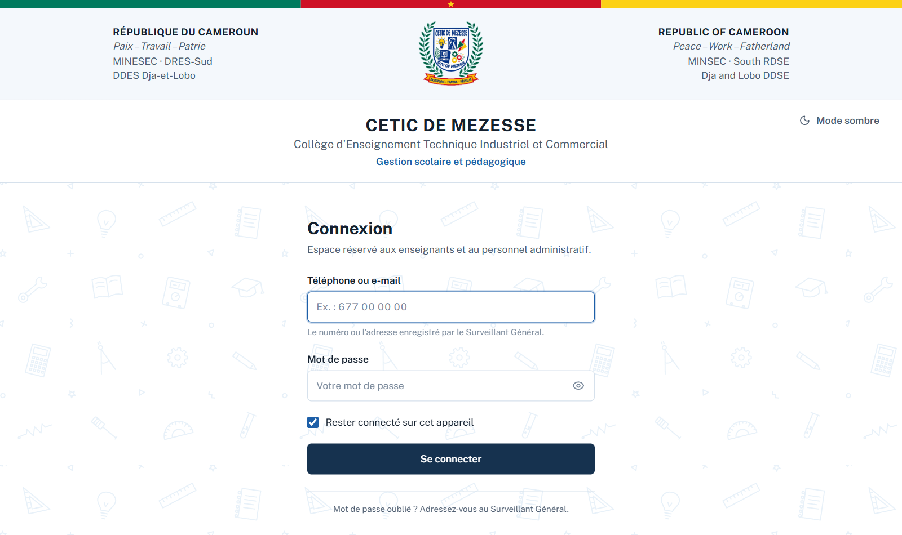
Figure 9 — Écran de connexion
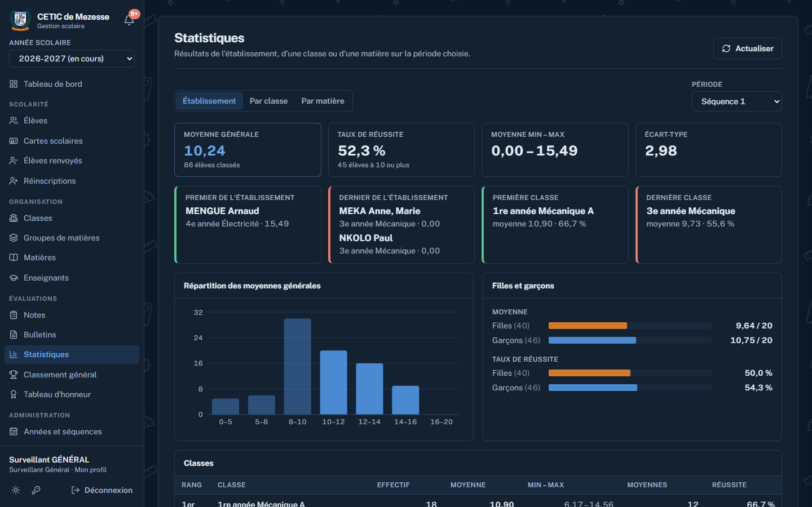
Figure 10 — Statistiques en mode sombre
9. Validation et tests
9.1 Tests unitaires du calcul
Vingt-sept tests automatiques (JUnit), joués à chaque envoi du code sur GitHub, vérifient les règles de gestion, le stockage des photos et le calcul. Les quinze tests du calcul couvrent les seuils des grades et des cotes, l'arrondi avant comparaison, les rangs avec ex æquo, la note 0 dans une matière évaluée, le retrait d'une matière non évaluée, les totaux et moyennes de groupe, les moyennes de trimestre et d'année avec séquences ou trimestres manquants, et la répartition par tranches. Ils passent tous.
9.2 Parcours de bout en bout
Un scénario automatisé de 31 contrôles a été joué contre l'API sur la base de démonstration (4 classes, 70 élèves, 14 professeurs). Tous passent, notamment :
connexion des trois rôles, refus d'un mauvais mot de passe ;
un professeur ne voit que ses matières et ne peut ouvrir la feuille d'un collègue, ni lister les élèves, ni produire des bulletins ;
saisie acceptée en séquence ouverte, refusée en séquence fermée, puis acceptée après réouverture par le SG ;
refus d'une note supérieure à 20 ou à trois décimales ;
création d'un élève par le Directeur avec un matricule au bon format ; le SG ne peut pas renvoyer ; renvoi, sortie de la liste, présence parmi les renvoyés, réintégration ;
création d'un compte professeur, première connexion avec password, refus de password comme nouveau mot de passe, réinitialisation ;
classement général et statistiques de classe cohérents.
9.3 Vérifications visuelles
Les bulletins de séquence, de trimestre et d'année, les listes et toutes les pages web ont été contrôlés sur des captures, en mode clair, en mode sombre et sur un écran de téléphone. Le code de l'application mobile passe l'analyse statique de Flutter sans erreur.
10. Déploiement
Composant
Hébergement
Remarque
Base de données
Neon (PostgreSQL)
migrations Flyway appliquées au démarrage de l'API
API
Azure App Service, Java 21 (compte étudiant)
le jar est construit et testé par GitHub Actions, puis déployé à chaque modification ; variables : base, JWT, CORS, B2
Application web
Vercel
redéployée à chaque modification ; variable NEXT_PUBLIC_API_URL
Photos des élèves
Backblaze B2
API compatible S3 ; disque local en développement
Application Android
GitHub Actions
l'APK est construit à chaque modification du dossier mobile
L'application est en ligne : le site web sur https://ceticmezesse.vercel.app, l'API sur Azure, la base sur Neon. Le code est réparti en trois dépôts GitHub (API, web, mobile), chacun avec son déploiement automatique.
11. Limites et perspectives
11.1 Limites de la version 1
Le bloc discipline du bulletin (absences, avertissements, blâmes) est rempli à la main, conformément au cahier des charges.
Pas de rôle Censeur, un seul Surveillant Général.
Sur mobile, seule la saisie des notes fonctionne sans réseau ; les autres modifications demandent une connexion.
Pas d'espace élève ni parent.
Pas de gestion des emplois du temps.
11.2 Perspectives
Saisie des absences et sanctions, reportées automatiquement sur le bulletin.
Envoi des résultats aux parents par SMS.
Plusieurs Surveillants Généraux, chacun responsable de ses classes, et un rôle Censeur.
Délibérations de fin d'année (admis, redouble, exclu) et passage automatique en classe supérieure.
12. Conclusion
L'application répond au cahier des charges des trois rôles : saisie des notes par les professeurs, y compris hors connexion sur mobile ; organisation complète de l'année et production des bulletins et listes par le Surveillant Général ; consultation, renvoi et réintégration, attestations des personnels et tableau d'honneur pour le Directeur. La conception Merise et UML a guidé une base de données dont les règles essentielles sont garanties par des contraintes, et un module de calcul isolé et testé assure des moyennes, des rangs et des statistiques exacts. L'application est en ligne et prête pour la prochaine séquence.
Annexe : écrans et documents produits
Figure 11 — Tableau de bord du Surveillant Général
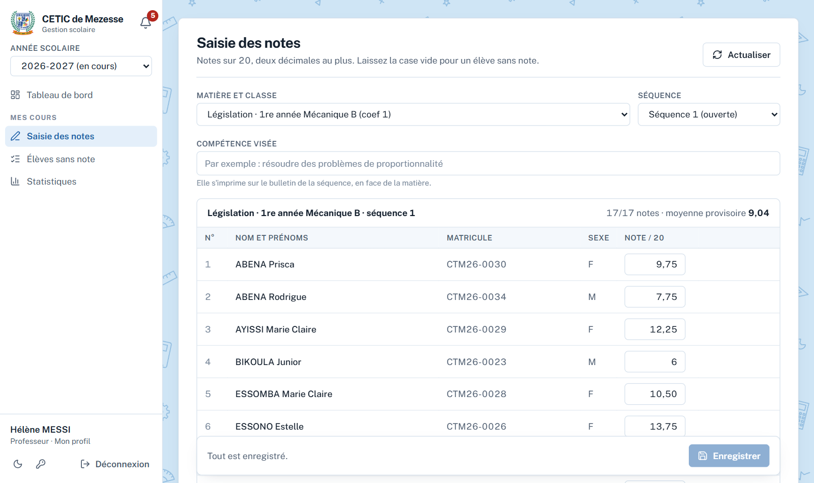
Figure 12 — Saisie des notes par un professeurFigure 13 — Relevé de notes d'une classeFigure 14 — Statistiques de l'établissementFigure 15 — Classement général
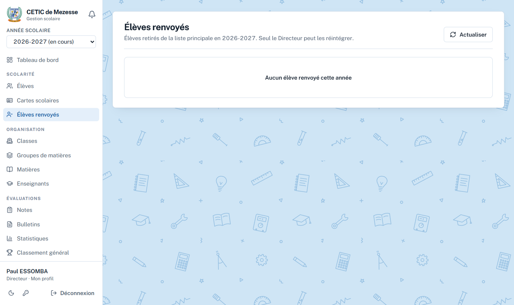
Figure 16 — Élèves renvoyés (Directeur)
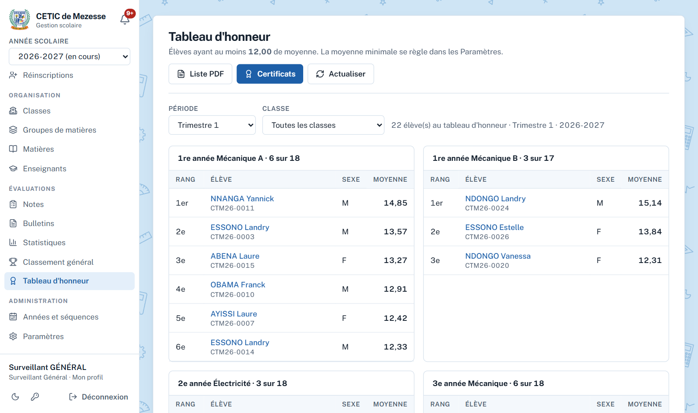
Figure 17 — Tableau d'honneur
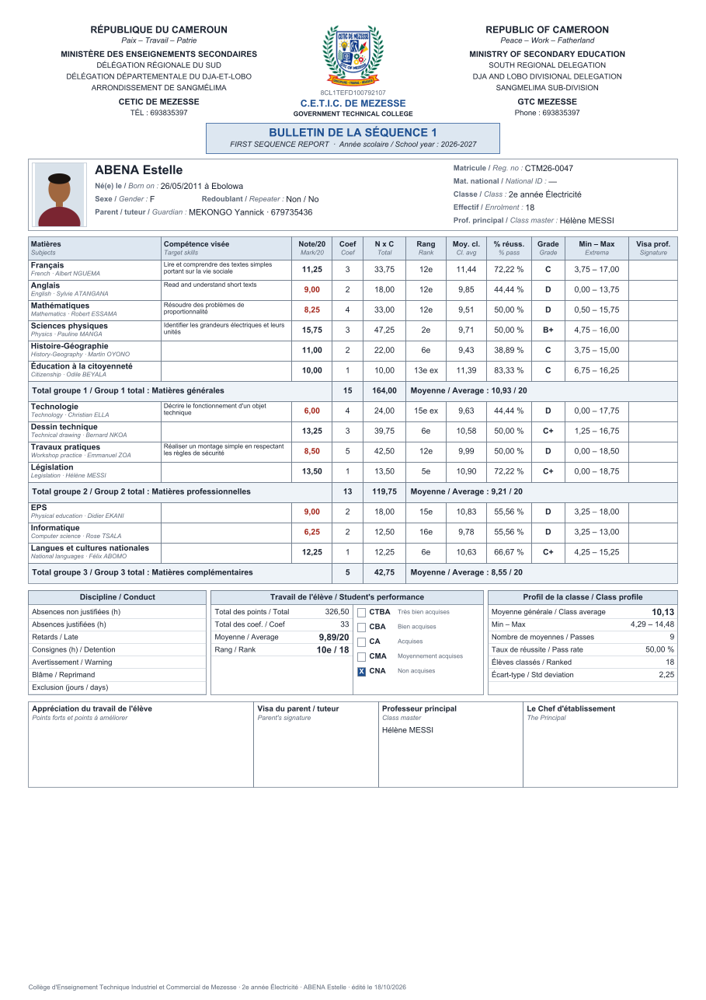
Figure 18 — Bulletin de séquence
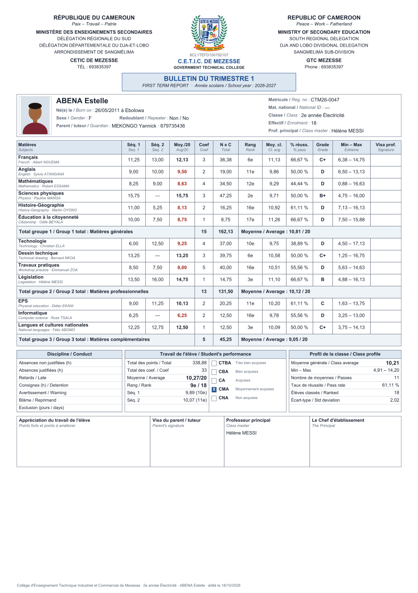
Figure 19 — Bulletin de trimestre
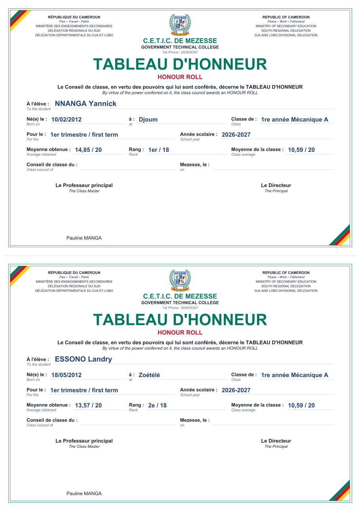
Figure 20 — Certificats du tableau d'honneurFigure 21 — Attestation de présence effective au poste